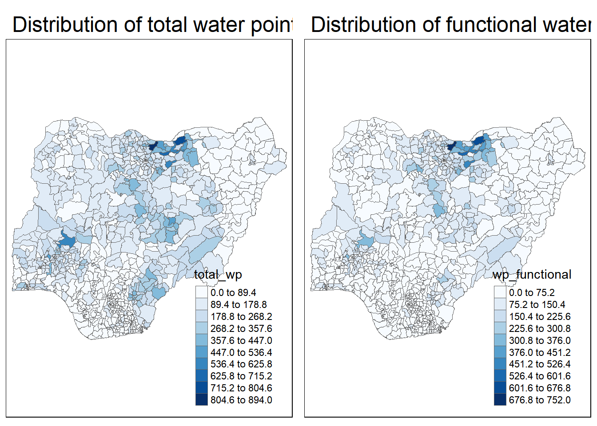
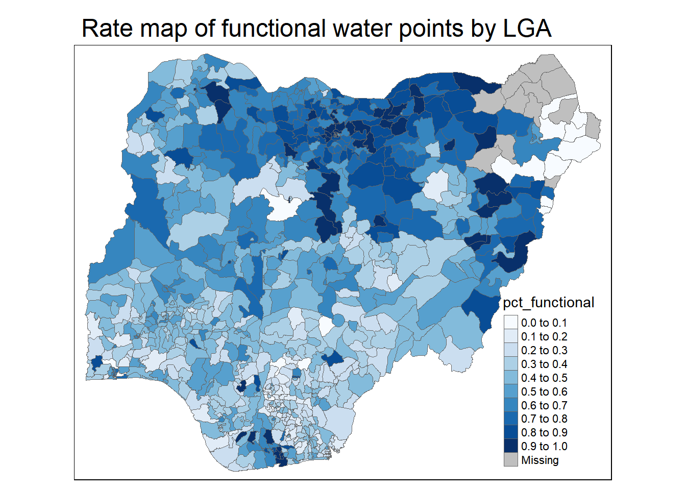
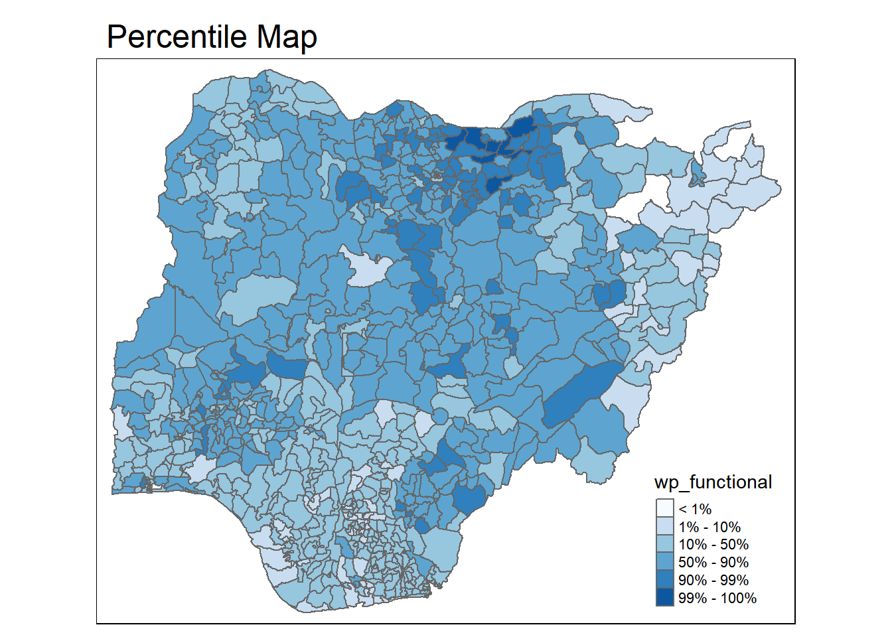

if (!require('pacman', character.only = T)){
install.packages('pacman')
}
library('pacman')1 Background
1.1 Objectives
In this in-class exercise, you will gain hands-on experience on using appropriate R methods to plot analytical maps. For the purpose of this exercise, Nigeria water point data prepared during In-class Exercise 2 will be used.
1.2 Task
By the end of this in-class exercise, you will be able to use appropriate functions of tmap and tidyverse to perform the following tasks:
Importing geospatial data in rds format into R environment.
Creating cartographic quality choropleth maps by using appropriate tmap functions.
Creating rate map
Creating percentile map
Creating boxmap
2 Getting Started
2.1 Installing and Loading Packages
Firstly, the code below will check if pacman has been installed. If it has not been installed, R will download and install it, before activating it for use during this session.
Next, pacman assists us by helping us load R packages that we require, sf, tidyverse and tmap.
pacman::p_load(sf, tidyverse, tmap)2.2 Importing Data
We want to import the sf dataframe we have cleaned and prepared earlier in In Class Exercise 02.
NGA_wp <- read_rds("In-Class_Ex03/data/rds/nigeria_wp.rds")2.3 Visualising Distribution of Non-Functional Water Points
Here, we will plot 2 maps, p1 which shows the functional water points and p2 by total number of water points for side-by-side visualisation.
p1 <- tm_shape(NGA_wp) +
tm_fill("wp_functional",
n = 10,
style = "equal",
palette = "Blues") +
tm_borders(lwd = 0.1,
alpha = 1) +
tm_layout(main.title = "Distribution of functional water points by LGA",
legend.outside = FALSE)p2 <- tm_shape(NGA_wp) +
tm_fill("total_wp",
n = 10,
style = "equal",
palette = "Blues") +
tm_borders(lwd = 0.1,
alpha = 1) +
tm_layout(main.title = "Distribution of total water points by LGA",
legend.outside = FALSE)Using the tmap_arrange() function, we can arrange the two maps plotted on a single row for side-by-side comparison.
tmap_arrange(p2, p1, nrow = 1)
3 Choropleth Map for Rates
By mapping the rate map of choropleth map, we can better tell the proportion of functional and non-functional water points, rather than just the total water point size.
3.1 Deriving Proportion of Functional Water Points and Non-Functional Water Points
With the code below, we use mutate() to calculate the percentages of functional and nonpfunctional water points.
NGA_wp <- NGA_wp %>%
mutate(pct_functional = wp_functional / total_wp) %>%
mutate(pct_nonfunctional = wp_nonfunctional / total_wp)3.2 Plotting Map of Rate
Utilising tmap, we can specify the NGA_wp dataframe to colour by pct_functional water points.
tm_shape(NGA_wp) +
tm_fill("pct_functional",
n = 10,
style = "equal",
palette = "Blues") +
tm_borders(lwd = 0.1,
alpha = 1) +
tm_layout(main.title = "Rate map of functional water points by LGA",
legend.outside = FALSE)
4 Extreme Value Maps
4.1 Percentile Map
A percentile is a special type of quantile map with the following categories:
0-1%
1-10%
10-50%
50-90%
90-99%
99 - 100%
To create the map, we can set the breakpoints as c(0, 0.01, 0.1, 0.5, 0.9, 0.99, 1). Note that the start and endpoints needs to be included.
4.1.1 Data Preparation
Firstly, we exclude records with NA using the code below:
NGA_wp <- NGA_wp %>%
drop_na()Secondly, we create a customised classification andextract the values.
percent <- c(0, 0.01, 0.1, 0.5, 0.9, 0.99, 1)
var <- NGA_wp["pct_functional"] %>%
st_set_geometry(NULL)
quantile(var[,1], percent) 0% 1% 10% 50% 90% 99% 100%
0.0000000 0.0000000 0.2169811 0.4791667 0.8611111 1.0000000 1.0000000 4.1.2 Function to Get Variable Data Frame
With the function below, we can extract a variable out of the sf dataframe as a vector.
get.var <- function(vname, df) {
v <- df[vname] %>%
st_set_geometry(NULL)
v <- unname(v[,1])
return(v)
}4.1.3 Percentile Mapping Function
This percentmap function allows us to take various inputs and automatically calculate the values and points needed for the percentile map.
The use of functions allows us to easily plot percentile maps of other variables flexibly without rewriting the entire code.
percentmap <- function(vnam, df, legtitle = NA, mtitle = "Percentile Map"){
percent <- c(0, 0.01, 0.1, 0.5, 0.9, 0.99, 1)
var <- get.var(vnam, df)
bperc <- quantile(var, percent)
tm_shape(df) +
tm_polygons() +
tm_shape(df) +
tm_fill(vnam,
title = legtitle,
breaks = bperc,
palette = "Blues",
labels = c("< 1%", "1% - 10%", "10% - 50%", "50% - 90%", "90% - 99%", "99% - 100%")) +
tm_borders() +
tm_layout(main.title = mtitle,
title.position = c("right", "bottom"))
}Plotting the Percentile Map of functional water points.
percentmap("wp_functional", NGA_wp)